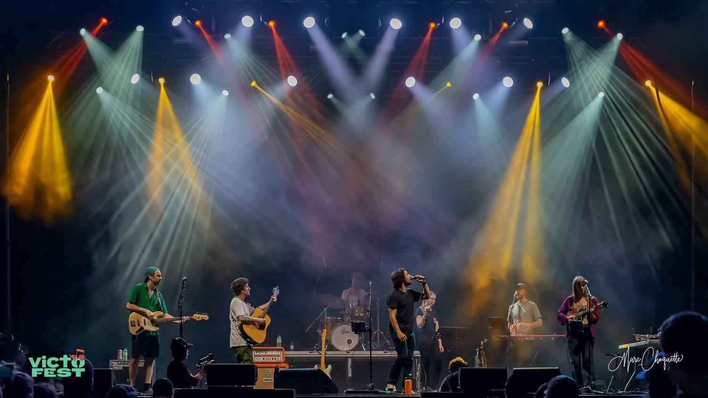
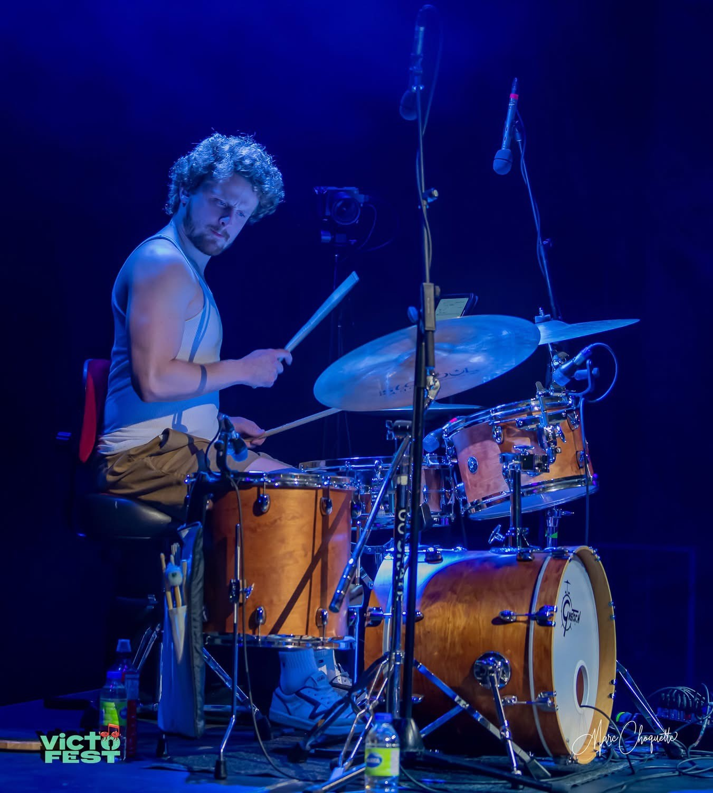
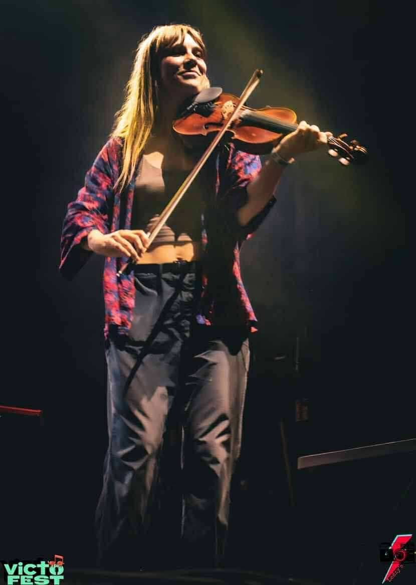
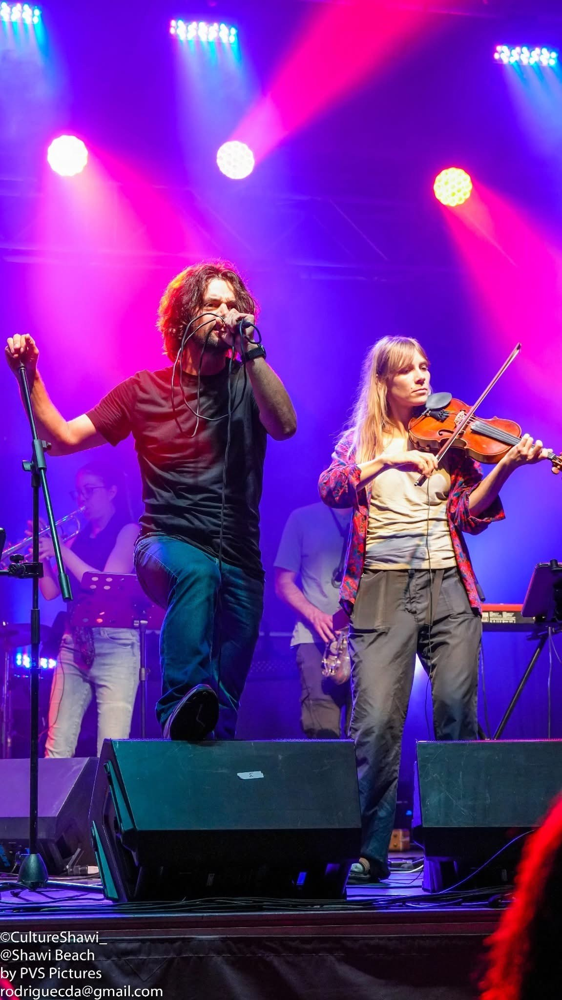
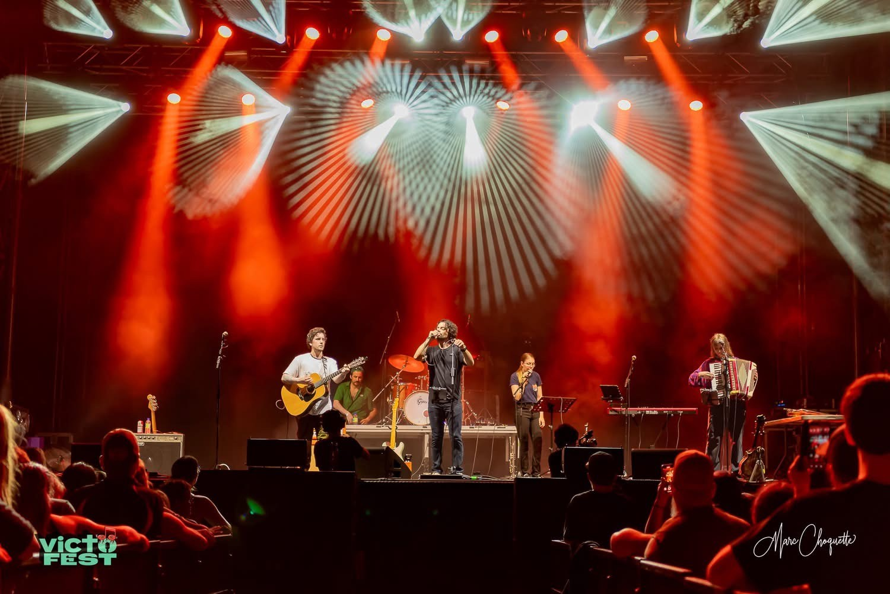
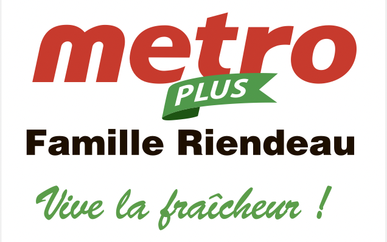

<style>
  @import url('https://fonts.googleapis.com/css2?family=Montserrat:ital,wght@0,400;0,700;0,800;0,900;1,400&display=swap');

  /* ── Variables ── */
  .fn-beloeil-2026 {
    --fn-navy:    #004f79;
    --fn-sky:     #00a1e1;
    --fn-sky-lt:  #e8f6fd;
    --fn-white:   #ffffff;
    --fn-ink:     #1a2b36;
    --fn-muted:   #4e636e;
    --fn-border:  rgba(0, 79, 121, 0.15);
    --fn-wine:    #7a2035;
    --fn-wine-lt: #f5e8eb;
    --fn-yellow:  #ffd025;
    --fn-width:   min(1120px, calc(100vw - 40px));

    color: var(--fn-ink);
    font-family: Montserrat, Gotham, Avenir, "Helvetica Neue", Arial, sans-serif;
    line-height: 1.5;
    background: var(--fn-white);
  }

  .fn-beloeil-2026 *,
  .fn-beloeil-2026 *::before,
  .fn-beloeil-2026 *::after { box-sizing: border-box; }

  .fn-beloeil-2026 a { color: inherit; }

  .fn-beloeil-2026 img {
    display: block;
    max-width: 100%;
  }

  .fn-beloeil-2026 h1,
  .fn-beloeil-2026 h2,
  .fn-beloeil-2026 h3,
  .fn-beloeil-2026 p { margin-top: 0; }

  /* ── Layout helpers ── */
  .fn-beloeil-2026 .fn-full {
    width: 100vw;
    margin-right: calc(50% - 50vw);
    margin-left:  calc(50% - 50vw);
  }

  .fn-beloeil-2026 .fn-wrap {
    width: var(--fn-width);
    margin: 0 auto;
  }

  /* ═══════════════════════════════════════
     HERO
  ═══════════════════════════════════════ */
  .fn-beloeil-2026 .fn-hero {
    position: relative;
    background: #29bde8;
    overflow: hidden;
    padding: clamp(52px, 8vw, 96px) 0 0;
    text-align: center;
  }

  .fn-beloeil-2026 .fn-hero-bg {
    position: absolute;
    inset: 0;
    width: 100%;
    height: 100%;
    z-index: 0;
  }

  .fn-beloeil-2026 .fn-hero-inner {
    position: relative;
    z-index: 1;
    width: var(--fn-width);
    margin: 0 auto;
    padding-bottom: clamp(60px, 9vw, 110px);
  }

  .fn-beloeil-2026 .fn-fleur-icon {
    display: block;
    font-size: clamp(48px, 6vw, 72px);
    line-height: 1;
    color: var(--fn-white);
    text-align: center;
    margin: 0 auto 20px;
    font-style: normal;
  }

  .fn-beloeil-2026 h1 {
    margin: 0 auto 12px;
    color: var(--fn-navy);
    font-size: clamp(2.8rem, 8vw, 7rem);
    font-weight: 900;
    line-height: 0.92;
    max-width: 14ch;
  }

  .fn-beloeil-2026 h1 em {
    display: block;
    color: var(--fn-white);
    font-size: 0.52em;
    font-style: normal;
    font-weight: 800;
    letter-spacing: 0.01em;
    line-height: 1.1;
  }

  .fn-beloeil-2026 .fn-hero-sub {
    max-width: 560px;
    margin: 18px auto 0;
    color: var(--fn-white);
    font-size: clamp(1rem, 1.8vw, 1.18rem);
  }

  .fn-beloeil-2026 .fn-kicker {
    display: inline-block;
    margin-bottom: 20px;
    padding: 6px 16px;
    background: var(--fn-sky-lt);
    color: var(--fn-sky);
    font-size: 0.80rem;
    font-weight: 800;
    letter-spacing: 0.10em;
    text-transform: uppercase;
  }

  /* Kicker variant on blue hero background */
  .fn-beloeil-2026 .fn-hero .fn-kicker {
    background: rgba(255, 255, 255, 0.9);
    color: var(--fn-navy);
  }

  /* ═══════════════════════════════════════
     WAVE DIVIDER (SVG inline via bg)
  ═══════════════════════════════════════ */
  .fn-beloeil-2026 .fn-wave {
    display: block;
    width: 100%;
    line-height: 0;
    overflow: hidden;
  }

  .fn-beloeil-2026 .fn-wave svg {
    display: block;
    width: 100%;
  }

  /* ═══════════════════════════════════════
     SECTIONS
  ═══════════════════════════════════════ */
  .fn-beloeil-2026 .fn-section {
    padding: clamp(52px, 8vw, 96px) 0;
  }

  .fn-beloeil-2026 .fn-section-sky {
    background: var(--fn-sky-lt);
  }

  .fn-beloeil-2026 h2 {
    color: var(--fn-navy);
    font-size: clamp(1.9rem, 4.5vw, 3.8rem);
    font-weight: 900;
    line-height: 0.96;
    margin-bottom: 24px;
  }

  .fn-beloeil-2026 h3 {
    color: var(--fn-navy);
    font-size: clamp(1.15rem, 2vw, 1.6rem);
    font-weight: 800;
    line-height: 1.1;
    margin-bottom: 10px;
  }

  .fn-beloeil-2026 p {
    color: var(--fn-muted);
    font-size: 1.05rem;
  }

  /* ═══════════════════════════════════════
     INTRO FACTS
  ═══════════════════════════════════════ */
  .fn-beloeil-2026 .fn-intro {
    display: grid;
    grid-template-columns: minmax(0, 0.95fr) minmax(0, 1.05fr);
    gap: clamp(28px, 6vw, 72px);
    align-items: start;
  }

  .fn-beloeil-2026 .fn-lead {
    color: var(--fn-navy);
    font-size: clamp(1.3rem, 2.8vw, 2.2rem);
    font-weight: 900;
    line-height: 1.1;
    margin-bottom: 0;
  }

  .fn-beloeil-2026 .fn-facts { display: grid; gap: 0; }

  .fn-beloeil-2026 .fn-fact {
    display: grid;
    grid-template-columns: 120px 1fr;
    gap: 18px;
    padding: 16px 0;
    border-bottom: 1px solid var(--fn-border);
  }

  .fn-beloeil-2026 .fn-fact strong {
    color: var(--fn-sky);
    font-size: 0.80rem;
    font-weight: 900;
    letter-spacing: 0.08em;
    text-transform: uppercase;
  }

  .fn-beloeil-2026 .fn-fact span {
    color: var(--fn-ink);
    font-size: 1rem;
  }

  /* ═══════════════════════════════════════
     PROGRAMME — two day cards
  ═══════════════════════════════════════ */
  .fn-beloeil-2026 .fn-program {
    display: grid;
    gap: 0;
  }

  .fn-beloeil-2026 .fn-day {
    display: grid;
    grid-template-columns: minmax(0, 1fr) minmax(280px, 0.9fr);
    gap: 0;
    background: var(--fn-white);
    border: 1px solid var(--fn-border);
    margin-bottom: 24px;
    overflow: hidden;
  }

  .fn-beloeil-2026 .fn-day-content {
    padding: clamp(26px, 4vw, 44px);
  }

  .fn-beloeil-2026 .fn-day-header {
    display: flex;
    align-items: baseline;
    flex-wrap: wrap;
    gap: 10px 20px;
    margin-bottom: 22px;
    padding-bottom: 18px;
    border-bottom: 2px solid var(--fn-border);
  }

  .fn-beloeil-2026 .fn-date {
    color: var(--fn-navy);
    font-size: clamp(2.4rem, 7vw, 5rem);
    font-weight: 900;
    line-height: 0.88;
  }

  .fn-beloeil-2026 .fn-place {
    color: var(--fn-sky);
    font-size: clamp(1rem, 2.2vw, 1.5rem);
    font-weight: 900;
  }

  .fn-beloeil-2026 .fn-hours-badge {
    display: inline-block;
    padding: 4px 10px;
    background: var(--fn-sky-lt);
    color: var(--fn-sky);
    font-size: 0.82rem;
    font-weight: 800;
  }

  .fn-beloeil-2026 .fn-events { display: grid; gap: 14px; }

  .fn-beloeil-2026 .fn-event {
    display: grid;
    grid-template-columns: 100px 1fr;
    gap: 16px;
    align-items: start;
  }

  .fn-beloeil-2026 .fn-time {
    color: var(--fn-navy);
    font-size: 1rem;
    font-weight: 900;
  }

  .fn-beloeil-2026 .fn-event p {
    margin-bottom: 0;
    color: var(--fn-ink);
    font-size: 1rem;
  }

  .fn-beloeil-2026 .fn-event p strong {
    color: var(--fn-sky);
  }

  /* Day photo side */
  .fn-beloeil-2026 .fn-day-photo {
    min-height: 260px;
    overflow: hidden;
    background: var(--fn-sky-lt);
  }

  .fn-beloeil-2026 .fn-day-photo img {
    width: 100%;
    height: 100%;
    object-fit: cover;
    transition: transform 500ms ease;
  }

  .fn-beloeil-2026 .fn-day:hover .fn-day-photo img {
    transform: scale(1.04);
  }

  /* ═══════════════════════════════════════
     ARTISTE — carte diagonale
  ═══════════════════════════════════════ */
  .fn-beloeil-2026 .fn-artist {
    display: grid;
    grid-template-columns: minmax(300px, 1fr) minmax(0, 1fr);
    gap: 0;
    overflow: hidden;
    min-height: 440px;
  }

  /* Photo — coupe diagonale sur le bord droit */
  .fn-beloeil-2026 .fn-artist-photo {
    position: relative;
    overflow: hidden;
    clip-path: polygon(0 0, 100% 0, 88% 100%, 0 100%);
    /* On compense le clip en élargissant la colonne légèrement */
    margin-right: -6%;
    z-index: 1;
  }

  .fn-beloeil-2026 .fn-artist-photo img {
    width: 100%;
    height: 100%;
    object-fit: cover;
    object-position: center top;
    transition: transform 600ms ease, filter 600ms ease;
  }

  .fn-beloeil-2026 .fn-artist:hover .fn-artist-photo img {
    transform: scale(1.05);
    filter: saturate(1.08);
  }

  /* Panneau texte — fond bleu nuit (cohérent avec la page) + décor fleur de lys */
  .fn-beloeil-2026 .fn-artist-content {
    position: relative;
    padding: clamp(36px, 6vw, 64px) clamp(30px, 5vw, 56px) clamp(36px, 6vw, 64px) clamp(48px, 7vw, 80px);
    background: var(--fn-navy);
    color: var(--fn-white);
    display: flex;
    flex-direction: column;
    justify-content: center;
    overflow: hidden;
  }

  /* Fleur de lys décorative en filigrane dans le fond */
  .fn-beloeil-2026 .fn-artist-content::before {
    content: "⚜";
    position: absolute;
    bottom: -0.18em;
    right: -0.06em;
    font-size: clamp(160px, 22vw, 280px);
    font-family: serif, Georgia;
    color: rgba(255,255,255,0.06);
    line-height: 1;
    pointer-events: none;
    user-select: none;
  }

  /* Trait d'accent bleu ciel */
  .fn-beloeil-2026 .fn-artist-content::after {
    content: "";
    position: absolute;
    top: 0;
    left: 0;
    width: 5px;
    height: 100%;
    background: var(--fn-sky);
  }

  .fn-beloeil-2026 .fn-eyebrow {
    display: inline-flex;
    align-items: center;
    gap: 8px;
    margin-bottom: 16px;
    color: var(--fn-sky);
    font-size: 0.76rem;
    font-weight: 900;
    letter-spacing: 0.14em;
    text-transform: uppercase;
    position: relative;
    z-index: 1;
  }

  .fn-beloeil-2026 .fn-eyebrow::before {
    content: "";
    display: inline-block;
    width: 28px;
    height: 2px;
    background: var(--fn-sky);
    flex-shrink: 0;
  }

  .fn-beloeil-2026 .fn-artist-content h2 {
    color: var(--fn-white);
    font-size: clamp(2.4rem, 5vw, 4.4rem);
    font-weight: 900;
    line-height: 0.9;
    margin-bottom: 14px;
    position: relative;
    z-index: 1;
  }

  .fn-beloeil-2026 .fn-artist-subtitle {
    color: var(--fn-sky);
    font-size: 1rem;
    font-style: italic;
    font-weight: 700;
    margin-bottom: 18px;
    position: relative;
    z-index: 1;
  }

  .fn-beloeil-2026 .fn-artist-content > p:not(.fn-artist-subtitle) {
    color: rgba(255,255,255,0.78);
    font-size: 1rem;
    line-height: 1.6;
    max-width: 42ch;
    margin-bottom: 0;
    position: relative;
    z-index: 1;
  }

  @media (max-width: 820px) {
    .fn-beloeil-2026 .fn-artist {
      grid-template-columns: 1fr;
    }

    .fn-beloeil-2026 .fn-artist-photo {
      clip-path: polygon(0 0, 100% 0, 100% 88%, 0 100%);
      margin-right: 0;
      margin-bottom: -6%;
      min-height: 280px;
    }

    .fn-beloeil-2026 .fn-artist-content::after {
      top: 0; left: 0;
      width: 100%; height: 5px;
    }
  }

  /* ═══════════════════════════════════════
     GALERIE
  ═══════════════════════════════════════ */
  .fn-beloeil-2026 .fn-gallery-header {
    margin-bottom: clamp(28px, 4vw, 48px);
  }

  .fn-beloeil-2026 .fn-gallery {
    display: grid;
    grid-template-columns: repeat(3, 1fr);
    grid-template-rows: 260px 260px;
    gap: 8px;
  }

  .fn-beloeil-2026 .fn-gallery-item {
    overflow: hidden;
    background: var(--fn-sky-lt);
  }

  .fn-beloeil-2026 .fn-gallery-item img {
    width: 100%;
    height: 100%;
    object-fit: cover;
    transition: transform 500ms ease, filter 400ms ease;
  }

  .fn-beloeil-2026 .fn-gallery-item:hover img {
    transform: scale(1.06);
    filter: brightness(1.06) saturate(1.1);
  }

  /* Tall item spans 2 rows */
  .fn-beloeil-2026 .fn-gallery-tall {
    grid-row: span 2;
  }

  /* Wide item spans 2 columns */
  .fn-beloeil-2026 .fn-gallery-wide {
    grid-column: span 2;
  }

  @media (max-width: 820px) {
    .fn-beloeil-2026 .fn-gallery {
      grid-template-columns: repeat(2, 1fr);
      grid-template-rows: auto;
    }

    .fn-beloeil-2026 .fn-gallery-tall,
    .fn-beloeil-2026 .fn-gallery-wide {
      grid-row: unset;
      grid-column: unset;
    }

    .fn-beloeil-2026 .fn-gallery-item {
      aspect-ratio: 4 / 3;
    }
  }

  @media (max-width: 560px) {
    .fn-beloeil-2026 .fn-gallery {
      grid-template-columns: 1fr;
    }
  }

  /* ═══════════════════════════════════════
     INFOS PRATIQUES
  ═══════════════════════════════════════ */
  .fn-beloeil-2026 .fn-practical {
    display: grid;
    grid-template-columns: repeat(3, minmax(0, 1fr));
    gap: 1px;
    background: var(--fn-border);
    border: 1px solid var(--fn-border);
  }

  .fn-beloeil-2026 .fn-practical-item {
    padding: clamp(24px, 4vw, 38px);
    background: var(--fn-white);
  }

  .fn-beloeil-2026 .fn-practical-icon {
    display: block;
    width: 40px;
    height: 4px;
    background: var(--fn-sky);
    margin-bottom: 20px;
  }

  .fn-beloeil-2026 .fn-practical-item h3 {
    color: var(--fn-navy);
    font-size: clamp(1.1rem, 2vw, 1.5rem);
    margin-bottom: 10px;
  }

  /* ═══════════════════════════════════════
     PARTENAIRES
  ═══════════════════════════════════════ */
  .fn-beloeil-2026 .fn-partners-intro {
    text-align: center;
    margin-bottom: clamp(32px, 5vw, 56px);
  }

  .fn-beloeil-2026 .fn-partners-intro h2 {
    margin: 0 auto 10px;
  }

  .fn-beloeil-2026 .fn-partners-intro p {
    max-width: 520px;
    margin: 0 auto;
  }

  .fn-beloeil-2026 .fn-logo-row {
    display: flex;
    flex-wrap: wrap;
    align-items: center;
    justify-content: center;
    gap: 28px 40px;
    margin-bottom: 32px;
  }

  .fn-beloeil-2026 .fn-logo-row img {
    display: block;
    object-fit: contain;
    filter: grayscale(0.2);
    opacity: 0.85;
    transition: filter 180ms ease, opacity 180ms ease, transform 180ms ease;
  }

  .fn-beloeil-2026 .fn-logo-row img:hover {
    filter: grayscale(0);
    opacity: 1;
    transform: translateY(-2px);
  }

  .fn-beloeil-2026 .fn-logo-lg { height: 60px; }
  .fn-beloeil-2026 .fn-logo-md { height: 46px; }
  .fn-beloeil-2026 .fn-logo-sm { height: 36px; }

  .fn-beloeil-2026 .fn-partner-list {
    display: flex;
    flex-wrap: wrap;
    justify-content: center;
    gap: 6px 24px;
    margin: 0;
    padding: 0;
    list-style: none;
    border-top: 1px solid var(--fn-border);
    padding-top: 24px;
  }

  .fn-beloeil-2026 .fn-partner-list li {
    color: var(--fn-muted);
    font-size: 0.9rem;
  }

  /* ═══════════════════════════════════════
     WAVE FOOTER — like poster bottom
  ═══════════════════════════════════════ */
  .fn-beloeil-2026 .fn-footer-wave {
    position: relative;
    overflow: hidden;
    padding: clamp(52px, 8vw, 96px) 0 clamp(60px, 9vw, 110px);
    background: var(--fn-sky);
    text-align: center;
  }

  /* Floating fleurs de lys in background */
  .fn-beloeil-2026 .fn-footer-wave::before {
    content: "";
    position: absolute;
    inset: 0;
    background-image:
      url("data:image/svg+xml,%3Csvg xmlns='http://www.w3.org/2000/svg' width='80' height='80' viewBox='0 0 64 80'%3E%3Cpath d='M32 4c-2 4-6 6-10 5 1 4 4 7 8 8-1 3-3 5-6 5 2 3 5 4 8 3l-2 8h4l-2-8c3 1 6 0 8-3-3 0-5-2-6-5 4-1 7-4 8-8-4 1-8-1-10-5z' fill='rgba(255,255,255,0.12)'/%3E%3C/svg%3E");
    background-size: 80px 80px;
    pointer-events: none;
  }

  .fn-beloeil-2026 .fn-footer-wave .fn-wrap {
    position: relative;
    z-index: 1;
  }

  .fn-beloeil-2026 .fn-footer-wave h2 {
    color: var(--fn-white);
    font-size: clamp(1.6rem, 4vw, 3.2rem);
    margin-bottom: 10px;
  }

  .fn-beloeil-2026 .fn-footer-wave p {
    color: rgba(255,255,255,0.88);
    max-width: 500px;
    margin: 0 auto 28px;
    font-size: 1rem;
  }

  /* ═══════════════════════════════════════
     REVEAL ANIMATIONS
  ═══════════════════════════════════════ */
  .fn-beloeil-2026 .fn-reveal { opacity: 1; transform: none; }

  .fn-beloeil-2026.has-js .fn-reveal {
    opacity: 0;
    transform: translateY(24px);
    transition: opacity 640ms ease, transform 640ms ease;
  }

  .fn-beloeil-2026.has-js .fn-reveal.fn-visible {
    opacity: 1;
    transform: none;
  }

  /* ═══════════════════════════════════════
     REDUCED MOTION
  ═══════════════════════════════════════ */
  @media (prefers-reduced-motion: reduce) {
    .fn-beloeil-2026 *, .fn-beloeil-2026 *::before, .fn-beloeil-2026 *::after {
      animation-duration: 1ms !important;
      transition-duration: 1ms !important;
    }
  }

  /* ═══════════════════════════════════════
     RESPONSIVE — 820px
  ═══════════════════════════════════════ */
  @media (max-width: 820px) {
    .fn-beloeil-2026 .fn-intro,
    .fn-beloeil-2026 .fn-artist { grid-template-columns: 1fr; }

    .fn-beloeil-2026 .fn-day { grid-template-columns: 1fr; }

    .fn-beloeil-2026 .fn-day-photo { min-height: 220px; order: -1; }

    .fn-beloeil-2026 .fn-artist-photo { min-height: 280px; }

    .fn-beloeil-2026 .fn-practical { grid-template-columns: 1fr; }
  }

  /* ═══════════════════════════════════════
     RESPONSIVE — 560px
  ═══════════════════════════════════════ */
  @media (max-width: 560px) {
    .fn-beloeil-2026 { --fn-width: min(100% - 28px, 1120px); }

    .fn-beloeil-2026 .fn-fact,
    .fn-beloeil-2026 .fn-event { grid-template-columns: 1fr; gap: 4px; }
  }
</style>

<section class="fn-beloeil-2026" aria-labelledby="fn-title">
  <!-- WordPress : remplacer les chemins ../assets/... par les URLs de la médiathèque. -->

  <!-- ═══ HERO ═══ -->
  <div class="fn-hero fn-full">

    <!-- Fond inspiré du bas du poster officiel : dégradé bleu, bulles, fleurs de lys, vagues -->
    <svg class="fn-hero-bg" aria-hidden="true" viewBox="0 0 1440 560"
         preserveAspectRatio="xMidYMid slice" xmlns="http://www.w3.org/2000/svg">
      <defs>
        <linearGradient id="fn-hero-grad" x1="0" y1="0" x2="0" y2="1">
          <stop offset="0%"   stop-color="#5cd4f5"/>
          <stop offset="55%"  stop-color="#1ab3e8"/>
          <stop offset="100%" stop-color="#0095d0"/>
        </linearGradient>
      </defs>

      <!-- Fond bleu -->
      <rect width="1440" height="560" fill="url(#fn-hero-grad)"/>

      <!-- Bulles translucides — scattered -->
      <circle cx="1050" cy="95"  r="92"  fill="none" stroke="rgba(255,255,255,0.28)" stroke-width="2"/>
      <circle cx="1050" cy="95"  r="60"  fill="rgba(255,255,255,0.10)"/>
      <circle cx="1230" cy="60"  r="48"  fill="rgba(255,255,255,0.14)" stroke="rgba(255,255,255,0.30)" stroke-width="1.5"/>
      <circle cx="1340" cy="190" r="70"  fill="rgba(255,255,255,0.09)"/>
      <circle cx="870"  cy="230" r="54"  fill="none" stroke="rgba(255,255,255,0.22)" stroke-width="2"/>
      <circle cx="680"  cy="130" r="36"  fill="rgba(255,255,255,0.12)" stroke="rgba(255,255,255,0.25)" stroke-width="1.5"/>
      <circle cx="780"  cy="320" r="68"  fill="rgba(255,255,255,0.08)"/>
      <circle cx="380"  cy="180" r="44"  fill="rgba(255,255,255,0.11)" stroke="rgba(255,255,255,0.22)" stroke-width="2"/>
      <circle cx="180"  cy="280" r="78"  fill="rgba(255,255,255,0.07)"/>
      <circle cx="520"  cy="380" r="50"  fill="none" stroke="rgba(255,255,255,0.20)" stroke-width="1.5"/>
      <circle cx="1150" cy="380" r="42"  fill="rgba(255,255,255,0.10)"/>
      <circle cx="1390" cy="380" r="55"  fill="rgba(255,255,255,0.08)" stroke="rgba(255,255,255,0.20)" stroke-width="1.5"/>
      <circle cx="100"  cy="440" r="46"  fill="rgba(255,255,255,0.12)"/>
      <circle cx="650"  cy="450" r="38"  fill="rgba(255,255,255,0.09)"/>

      <!-- Fleurs de lys — marine foncé, bleu moyen et blanc, tailles variées -->
      <!-- Groupe gauche -->
      <text x="72"   y="552" font-size="168" font-family="serif,Georgia,Times" fill="#00284f" opacity="0.92" text-anchor="middle">⚜</text>
      <text x="270"  y="530" font-size="104" font-family="serif,Georgia,Times" fill="#003d6b" opacity="0.78" text-anchor="middle">⚜</text>

      <!-- Groupe centre-gauche -->
      <text x="490"  y="556" font-size="140" font-family="serif,Georgia,Times" fill="#00284f" opacity="0.86" text-anchor="middle">⚜</text>

      <!-- Groupe centre -->
      <text x="720"  y="534" font-size="96"  font-family="serif,Georgia,Times" fill="#0066a0" opacity="0.68" text-anchor="middle">⚜</text>
      <text x="860"  y="552" font-size="122" font-family="serif,Georgia,Times" fill="#003d6b" opacity="0.80" text-anchor="middle">⚜</text>

      <!-- Groupe droite — fleurs blanches comme dans le poster -->
      <text x="1080" y="540" font-size="88"  font-family="serif,Georgia,Times" fill="#ffffff"  opacity="0.88" text-anchor="middle">⚜</text>
      <text x="1240" y="558" font-size="156" font-family="serif,Georgia,Times" fill="#ffffff"  opacity="0.82" text-anchor="middle">⚜</text>
      <text x="1400" y="534" font-size="100" font-family="serif,Georgia,Times" fill="#00284f" opacity="0.72" text-anchor="middle">⚜</text>

      <!-- Vague arrière (bleu moyen) -->
      <path d="M0 460 C180 430 360 475 540 455 C720 435 900 475 1080 455
               C1260 435 1380 462 1440 455 L1440 560 L0 560 Z"
            fill="rgba(0,140,200,0.45)"/>

      <!-- Vague avant (blanc semi-transparent) -->
      <path d="M0 498 C200 472 400 508 600 490 C800 472 1000 508 1200 490
               C1320 478 1400 500 1440 492 L1440 560 L0 560 Z"
            fill="rgba(255,255,255,0.55)"/>

      <!-- Bas en blanc pour transition douce vers la section suivante -->
      <path d="M0 530 C240 514 480 542 720 525 C960 508 1200 538 1440 522
               L1440 560 L0 560 Z"
            fill="rgba(255,255,255,0.85)"/>
    </svg>

    <div class="fn-hero-inner">
      <span class="fn-fleur-icon" aria-hidden="true">⚜</span>

      <p class="fn-kicker">Beloeil · 23 et 24 juin 2026</p>

      <h1 id="fn-title">
        Fête nationale
        <em>du Québec</em>
      </h1>

      <p class="fn-hero-sub">
        Deux jours de festivités au Vieux-Beloeil et au parc du Petit-Rapide :
        animations, activités familiales, feux d'artifice et spectacle de
        Joyeux Calvaire en hommage aux Cowboys Fringants.
      </p>
    </div>

    <!-- Vague de transition vers la section intro bleu pâle -->
    <div class="fn-wave" aria-hidden="true">
      <svg viewBox="0 0 1440 54" xmlns="http://www.w3.org/2000/svg" preserveAspectRatio="none">
        <path d="M0 27C240 54 480 0 720 27C960 54 1200 0 1440 27V54H0V27Z" fill="#e8f6fd"/>
      </svg>
    </div>
  </div>

  <!-- ═══ INTRO FACTS ═══ -->
  <div class="fn-section fn-section-sky fn-full" style="padding-bottom: 0;">
    <div class="fn-wrap fn-intro">
      <p class="fn-lead fn-reveal">
        Un rendez-vous rassembleur pour célébrer la culture québécoise, la musique
        et les moments en famille au cœur de Beloeil.
      </p>
      <div class="fn-facts fn-reveal" aria-label="Résumé de l'événement">
        <div class="fn-fact">
          <strong>Dates</strong>
          <span>23 juin, de 20 h à 23 h, et 24 juin, de 14 h à 19 h.</span>
        </div>
        <div class="fn-fact">
          <strong>Lieux</strong>
          <span>Vieux-Beloeil le 23 juin, puis parc du Petit-Rapide le 24 juin.</span>
        </div>
        <div class="fn-fact">
          <strong>À prévoir</strong>
          <span>Maillots ou vêtements de rechange pour les activités d'eau.</span>
        </div>
      </div>
    </div>

    <div class="fn-wave" aria-hidden="true">
      <svg viewBox="0 0 1440 48" xmlns="http://www.w3.org/2000/svg" preserveAspectRatio="none">
        <path d="M0 24C360 48 720 0 1080 24C1260 36 1380 18 1440 24V48H0V24Z" fill="#ffffff"/>
      </svg>
    </div>
  </div>

  <!-- ═══ PROGRAMME ═══ -->
  <div id="fn-programmation" class="fn-section">
    <div class="fn-wrap">
      <h2 class="fn-reveal">Programmation</h2>
      <div class="fn-program">

        <!-- 23 juin -->
        <div class="fn-day fn-reveal">
          <div class="fn-day-content">
            <div class="fn-day-header">
              <div class="fn-date">23 juin</div>
              <span class="fn-place">Vieux-Beloeil</span>
              <span class="fn-hours-badge">20 h à 23 h</span>
            </div>
            <div class="fn-events">
              <div class="fn-event">
                <strong class="fn-time">20 h</strong>
                <p>Animations de rue et musique d'ambiance.</p>
              </div>
              <div class="fn-event">
                <strong class="fn-time">22 h</strong>
                <p>Feux d'artifice en partenariat avec la Ville de Mont-Saint-Hilaire.</p>
              </div>
            </div>
          </div>
          <div class="fn-day-photo">
            <!-- WordPress : remplacer par une photo de feux d'artifice lorsque disponible -->
            
          </div>
        </div>

        <!-- 24 juin -->
        <div class="fn-day fn-reveal">
          <div class="fn-day-content">
            <div class="fn-day-header">
              <div class="fn-date">24 juin</div>
              <span class="fn-place">parc du Petit-Rapide</span>
              <span class="fn-hours-badge">14 h à 19 h</span>
            </div>
            <div class="fn-events">
              <div class="fn-event">
                <strong class="fn-time">14 h à 19 h</strong>
                <p>
                  Mur d'escalade, trampolines,
                  <strong>jeux gonflables d'eau et plage de mousse&nbsp;!</strong>
                  Jeux, animations, organismes, ateliers culturels et maquillage.
                </p>
              </div>
              <div class="fn-event">
                <strong class="fn-time">17 h</strong>
                <p>Discours patriotique et spectacle de Joyeux Calvaire.</p>
              </div>
            </div>
          </div>
          <div class="fn-day-photo">
            
          </div>
        </div>

      </div>
    </div>
  </div>

  <!-- ═══ ARTISTE ═══ -->
  <div class="fn-section">
    <div class="fn-wrap fn-reveal">
      <div class="fn-artist">
        <div class="fn-artist-photo">
          
        </div>
        <div class="fn-artist-content">
          <span class="fn-eyebrow">Spectacle vedette — 24 juin, 17 h</span>
          <h2>Joyeux<br>Calvaire</h2>
          <p class="fn-artist-subtitle">Hommage aux Cowboys Fringants</p>
          <p>
            Un hommage festif à l'un des groupes emblématiques du Québec,
            avec l'énergie d'un grand rassemblement populaire.
            Le spectacle suivra le discours patriotique au parc du Petit-Rapide.
          </p>
        </div>
      </div>
    </div>
  </div>

  <!-- ═══ GALERIE — ambiance des années précédentes ═══ -->
  <div class="fn-section fn-full">
    <div class="fn-wrap">
      <div class="fn-gallery-header fn-reveal">
        <p class="fn-kicker" style="background:none; padding:0;">Coup d'œil sur les années précédentes</p>
        <h2>L'ambiance en images</h2>
        <p style="max-width: 560px;">Des moments forts qui donnent le ton pour cette nouvelle édition.</p>
      </div>
      <div class="fn-gallery fn-reveal">
        <div class="fn-gallery-item fn-gallery-tall">
          
        </div>
        <div class="fn-gallery-item">
          
        </div>
        <div class="fn-gallery-item">
          
        </div>
        <div class="fn-gallery-item fn-gallery-wide">
          
        </div>
        <div class="fn-gallery-item">
          
        </div>
      </div>
    </div>
  </div>

  <!-- ═══ INFOS PRATIQUES ═══ -->
  <div class="fn-section">
    <div class="fn-wrap">
      <h2 class="fn-reveal">Infos pratiques</h2>
      <div class="fn-practical fn-reveal">
        <div class="fn-practical-item">
          <span class="fn-practical-icon"></span>
          <h3>Activités d'eau</h3>
          <p>Des jeux gonflables d'eau et une plage de mousse sont prévus. Apportez vos maillots ou vêtements de rechange.</p>
        </div>
        <div class="fn-practical-item">
          <span class="fn-practical-icon"></span>
          <h3>Sur place</h3>
          <p>Des kiosques alimentaires et des rafraîchissements seront disponibles pendant l'événement.</p>
        </div>
        <div class="fn-practical-item">
          <span class="fn-practical-icon"></span>
          <h3>Information</h3>
          <p>Consultez le site Web de la Ville pour les mises à jour avant votre visite.</p>
        </div>
      </div>
    </div>
  </div>

  <!-- ═══ PARTENAIRES ═══ -->
  <div class="fn-section fn-section-sky fn-full">
    <div class="fn-wrap">
      <div class="fn-partners-intro fn-reveal">
        <p class="fn-kicker" style="display:block; text-align:center; background:none; padding:0; margin-bottom:10px;">Merci à nos partenaires</p>
        <h2>Une fête portée par le milieu</h2>
        <p>La programmation est rendue possible grâce à la collaboration de partenaires publics, communautaires et privés.</p>
      </div>

      <div class="fn-logo-row fn-reveal" aria-label="Logos des partenaires disponibles">
        
        
        
      </div>

      <ul class="fn-partner-list fn-reveal">
        <li>Hydro-Québec</li>
        <li>Gouvernement du Québec</li>
        <li>Société Saint-Jean-Baptiste</li>
        <li>Mouvement national des Québécoises et Québécois</li>
        <li>Ville de Mont-Saint-Hilaire</li>
        <li>VR St-Cyr</li>
        <li>Mathieu Carrière RE/MAX</li>
        <li>Simon Jolin-Barrette</li>
        <li>Gouvernement du Canada</li>
      </ul>
    </div>
  </div>

  <!-- ═══ FOOTER WAVE — bleu ciel avec fleurs de lys ═══ -->
  <div class="fn-footer-wave fn-full fn-reveal">
    <div class="fn-wrap">
      <span aria-hidden="true" style="display:block; font-size:clamp(36px,4vw,52px); line-height:1; color:rgba(255,255,255,0.75); margin:0 auto 18px;">⚜</span>
      <h2>Bonne Fête nationale&nbsp;!</h2>
      <p>Rendez-vous les 23 et 24 juin 2026 à Beloeil pour célébrer ensemble.</p>
    </div>
  </div>

</section>

<script>
(function () {
  var root = document.querySelector('.fn-beloeil-2026');
  if (!root) return;
  root.classList.add('has-js');
  if (!('IntersectionObserver' in window)) {
    root.querySelectorAll('.fn-reveal').forEach(function (el) { el.classList.add('fn-visible'); });
    return;
  }
  var obs = new IntersectionObserver(function (entries) {
    entries.forEach(function (e) {
      if (e.isIntersecting) { e.target.classList.add('fn-visible'); obs.unobserve(e.target); }
    });
  }, { threshold: 0.10 });
  root.querySelectorAll('.fn-reveal').forEach(function (el) { obs.observe(el); });
})();
</script>
